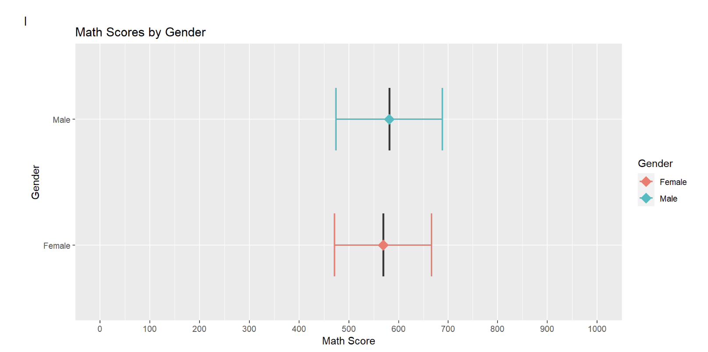

pacman::p_load(tidyverse, haven, ggrepel, ggthemes, hrbrthemes, patchwork, intsvy, ggdist, ggridges,colorspace, plotly)Take-Home Exercise 1c : DataVis Makeover of another student’s work
DataVis Makeover
Remaking a peer’s original design by improving the clarity and aesthetics of charts by creating an alternative design.
1. The Task
In this take-home exercise, we are required to:
select one of the Take-home Exercise 1 prepared by our classmates,
critique the submission in terms of clarity and aesthetics,
prepare a sketch for the alternative design by using the data visualization design principles and best practices we have learned in Lesson 1 and 2, and
remake the original design by using ggplot2, ggplot2 extensions and tidyverse packages.
2. Data Preparation
I will follow the data preparation steps done by the original author of the selector graphs. The steps are listed below for easy reference. As this is not the focus of the exercise, I will not go into the minute details of preparation.
2.1 Loading R packages
2.2 Importing the Data set
stu_qqq_SG <-
read_rds("data/stu_qqq_SG.rds")2.3 Removing missing values and Converting data types
Rows with missing values for ESCS were removed before further analysis.
Show the code
stu_qqq_SG_clean <- stu_qqq_SG[complete.cases(stu_qqq_SG[, "ESCS"]), ]CNTSCHID and CNTSTUID’s data types were changed to character.
Show the code
stu_qqq_SG_clean$CNTSCHID <- as.character(stu_qqq_SG_clean$CNTSCHID)
stu_qqq_SG_clean$CNTSTUID <- as.character(stu_qqq_SG_clean$CNTSTUID)2.4 Binning Variable ESCS
The ESCS variable was binned into quantiles using the mutate() and cut() function
Show the code
stu_qqq_SG_clean <- stu_qqq_SG_clean %>%
mutate(ESCS_recoded = cut(ESCS,breaks=quantile(ESCS,c(0,0.25,0.5,0.75,1)),labels=c("Very Low","Low","Medium","High"),include.lowest=TRUE))2.5 Recoding ST004D01T (Gender) variable
Variable ST004D01T, was recoded to labels to “Female” and “Male” respectively.
Show the code
stu_qqq_SG_clean$ST004D01T <- recode(stu_qqq_SG_clean$ST004D01T, "1" = "Female", "2" = "Male")3. Visualization Critique and Remake
The graphs created by the author will be evaluated and improvements in terms of clarity and aesthetics will be applied in the makeover.
3.1 General distribution of students’ performance in Math, Science and Reading
First, the author had created a data folder path to save any data files generated:
Show the code
data_folder_path <- file.path(getwd(), "data")The code below uses the instvy package to extract the composite Means and Standard Deviations of PV values across the population of students that took the assessment.
Show the code
pvmathgeneral <- pisa.mean.pv(pvlabel=paste0("PV",1:10,"MATH"), data=stu_qqq_SG_clean,export=FALSE,name="pvmath_general",folder=data_folder_path)
pvmathgeneral$subject <- "Math"
pvreadgeneral <- pisa.mean.pv(pvlabel=paste0("PV",1:10,"READ"), data=stu_qqq_SG_clean,export=FALSE,name="pvread_general",folder=data_folder_path)
pvreadgeneral$subject <- "Reading"
pvsciegeneral <- pisa.mean.pv(pvlabel=paste0("PV",1:10,"SCIE"), data=stu_qqq_SG_clean,export=FALSE,name="pvscie_general",folder=data_folder_path)
pvsciegeneral$subject <- "Science"
mergedgeneral <- rbind(pvmathgeneral,pvreadgeneral,pvsciegeneral)
mergedgeneral %>% relocate(subject) subject Freq Mean s.e. SD s.e
1 Math 6559 575.27 1.26 102.68 0.93
2 Reading 6559 543.25 1.91 105.73 1.16
3 Science 6559 561.97 1.33 99.02 1.10A plot to show the general distribution of Math, Reading and Science scores was generated using the code below.
The author had created a series of error bars across the 3 subjects to represent the distribution of Student scores across the 3 subjects.
p1<- ggplot(mergedgeneral, aes(x = subject, y = Mean,colour=subject)) +
geom_boxplot(width = 0.5, position = position_dodge(width = 0.75),lwd=0.5,show.legend=FALSE) +
stat_summary(
fun = mean,
geom = "point",
shape = 18,
size = 5,
aes(colour=subject),
position = position_dodge(width = 0.75)) +
geom_errorbar(
aes(ymin = Mean - SD, ymax = Mean + SD),
width = 0.5,
size=0.8,
position = position_dodge(width = 0.5)
) +
labs(title = "Scores across Math, Reading and Science across all 15-year olds who took PISA 2022 in SGP") +
ylab("Scores") +
xlab("Subject")+
scale_y_continuous(limits = c(0, 1000), breaks = seq(0, 1000, by = 50))+
coord_flip() +
theme_minimal(base_size = 12)
p13.1.1 Evaluation
| Assessment Criteria | Critique/Feedback | Possible Improvements |
|---|---|---|
| Clarity |
|
|
| Aesthetics |
|
|
Observation
Upon closer examination of the code used, the author had included an error bar with Mean +/- one standard deviation.
#geom_errorbar(
#aes(ymin = Mean - SD, ymax = Mean + SD),
#width = 0.5,
#size=0.8,
#position = position_dodge(width = 0.5)I would conclude that this plot is actually comparing the mean subject scores across subjects.
Examining the subset used for the original plot in more detail.
print(mergedgeneral) Freq Mean s.e. SD s.e subject
1 6559 575.27 1.26 102.68 0.93 Math
2 6559 543.25 1.91 105.73 1.16 Reading
3 6559 561.97 1.33 99.02 1.10 ScienceThe mergedgeneral subset table only has 3 observations and 6 variables.
Conclusion
The code and data subset used by the author will not be able to plot a Distribution of student scores across subjects.
I will revert to the original large data set to extract PV1 scores which are available for all students to create new plots to visualize the distribution of scores.
3.1.2 Sketch of Proposed Design
Rough sketch of proposed design is shown below.
3.1.3 Remake
The original data sub set and plot is unable to exhibit the distribution of student scores across subjects, due to the lack of scores at an individual student level.
First, I will use the code below derive some reference lines (mean and median) for our histograms.
To populate the distribution of scores for the student cohort, I will use PV1 scores, which are available for all students.
Show the code
mean_pv1math <- mean(stu_qqq_SG$PV1MATH)
median_pv1math <- median(stu_qqq_SG$PV1MATH)
mean_pv1read <- mean(stu_qqq_SG$PV1READ)
median_pv1read <- median(stu_qqq_SG$PV1READ)
mean_pv1scie <- mean(stu_qqq_SG$PV1SCIE)
median_pv1scie <- median(stu_qqq_SG$PV1SCIE)Next, I will use the code below and extract data points (PV1 scores) from the original large data set to create Histograms with Density plots for each subject.
Show the code
p_1 <- ggplot(stu_qqq_SG, aes(x = PV1MATH)) +
geom_histogram(aes(y = ..density..), binwidth = 20, color = "black", fill='lightblue') +
geom_density(color = "purple") +
coord_cartesian(xlim = c(0, 1000)) +
labs(x = "Math Scores", y = "Density") + # Change label to 'Density'
geom_vline(xintercept = mean_pv1math, color = 'black', size = 0.65, linetype = "dashed") +
geom_text(
aes(x = mean_pv1math, y = 0.0025, label = paste("Mean:", round(mean_pv1math, 2))), # Adjust y position for text
color = "black", hjust = 1.75, size = 3
) +
geom_vline(xintercept = median_pv1math, color = 'red', size = 0.65, linetype = "dashed") +
geom_text(
aes(x = median_pv1math, y = 0.0025, label = paste("Median:", round(median_pv1math, 2))), # Adjust y position for text
color = "red", hjust = -0.75, size = 3
) +
theme_minimal()
p_2 <- ggplot(stu_qqq_SG, aes(x = PV1READ)) +
geom_histogram(aes(y = ..density..), binwidth = 20, color = "black", fill='lightgreen') +
geom_density(color = "purple") +
coord_cartesian(xlim = c(0, 1000)) +
labs(x = "Reading Scores", y = "Density") +
geom_vline(xintercept = mean_pv1read, color = 'black', size = 0.65, linetype = "dashed") +
geom_text(
aes(x = mean_pv1read, y = 0.0025, label = paste("Mean:", round(mean_pv1read, 2))), # Adjust y position for text
color = "black", hjust = 1.75, size = 3
) +
geom_vline(xintercept = median_pv1read, color = 'red', size = 0.65, linetype = "dashed") +
geom_text(
aes(x = median_pv1read, y = 0.0025, label = paste("Median:", round(median_pv1read, 2))), # Adjust y position for text
color = "red", hjust = -0.75, size = 3
) +
theme_minimal()
p_3 <- ggplot(stu_qqq_SG, aes(x = PV1SCIE)) +
geom_histogram(aes(y = ..density..), binwidth = 20, color = "black", fill='lightpink') +
geom_density(color = "purple") +
coord_cartesian(xlim = c(0, 1000)) +
labs(x = "Science Scores", y = "Density") +
geom_vline(xintercept = mean_pv1scie, color = 'black', size = 0.65, linetype = "dashed") +
geom_text(
aes(x = mean_pv1scie, y = 0.0025, label = paste("Mean:", round(mean_pv1scie, 2))), # Adjust y position for text
color = "black", hjust = 1.75, size = 3
) +
geom_vline(xintercept = median_pv1scie, color = 'red', size = 0.65, linetype = "dashed") +
geom_text(
aes(x = median_pv1scie, y = 0.0025, label = paste("Median:", round(median_pv1scie, 2))), # Adjust y position for text
color = "red", hjust = -0.75, size = 3
) +
theme_minimal()
p_4 <- ggplot(stu_qqq_SG, aes(x = PV1MATH, fill = "Math")) +
geom_density(alpha = 0.5) +
geom_density(data = stu_qqq_SG, aes(x = PV1READ, fill = "Reading"), alpha = 0.5) +
geom_density(data = stu_qqq_SG, aes(x = PV1SCIE, fill = "Science"), alpha = 0.5) +
labs(x = "Combined Scores",
y = "Density") +
scale_fill_manual(values = c("Math" = "lightblue", "Reading" = "lightgreen", "Science" = "lightpink")) +
guides(fill = FALSE) + # Remove the legend
theme_minimal()Finally, using the code below, I will create a composite graph for all the histograms and density plots.
Show the code
patch1 <- (p_1 + p_2) / (p_3 + p_4) +
plot_annotation(
title = "Distribution of student performance in Math, Reading and Science",
subtitle = "All subjects exhibit a slight left-skewed distribution" )
patch1 & theme( axis.text.y = element_blank(),panel.grid.major = element_blank(),)
Revised Plot
The revised plot consists of a patchwork of 3 histograms with density curves, and a combined density curve overlay for the 3 subjects.
Reference lines for the mean and median scores are added to enable readers to infer the skewness of the distribution of student scores.
The revised plot will enable readers to quickly infer the nature of the distributions of the subject scores for the student cohort.
3.2 Distribution of students’ performance in Math, Science and Reading across schools
The author has used the pisa.mean.pv function from intsvypackage, to obtain the composite Mean and Standard Deviation values from “PV1MATH” to “PV10MATH”, “PV1READ” to “PV10READ” and “PV1SCIE” to “PV10SCIE” for each school.
The code below generates the composite PV values.
Show the code
pvmathsch <- pisa.mean.pv(pvlabel=paste0("PV",1:10,"MATH"),by= "CNTSCHID", data=stu_qqq_SG_clean,export=FALSE,name="pvmath_bysch",folder=data_folder_path)
pvreadsch <- pisa.mean.pv(pvlabel=paste0("PV",1:10,"READ"),by= "CNTSCHID", data=stu_qqq_SG_clean,export=FALSE,name="pvread_bysch",folder=data_folder_path)
pvsciesch <- pisa.mean.pv(pvlabel=paste0("PV",1:10,"SCIE"),by= "CNTSCHID", data=stu_qqq_SG_clean,export=FALSE,name="pvscie_bysch",folder=data_folder_path)A plot to show the distribution of students performance in Math, Reading and Science scores across schools was generated using the code below.
The author had created a series of error bars across the 3 subjects to represent the subject scores by each school id (164 schools).
p2<- ggplot(pvmathsch, aes(x = as.factor(CNTSCHID), y = Mean)) +
geom_boxplot(width = 0.5, position = position_dodge(width = 0.75),lwd=1.5) +
stat_summary(
fun = mean,
geom = "point",
shape = 18,
size = 5,
position = position_dodge(width = 0.75),
color = "red"
) +
geom_errorbar(
aes(ymin = Mean - SD, ymax = Mean + SD),
width = 0.8,
size=1,
position = position_dodge(width = 10)
) +
labs(title = "Math Scores by School") +
ylab("Math Score") +
xlab("School ID")+
scale_y_continuous(limits=c(0,1000),breaks = seq(0, 1000, by=100))+
coord_flip() +
theme_minimal(base_size=20) 3.2.1 Evaluation
| Assessment Criteria | Critique/Feedback | Possible Improvements |
|---|---|---|
| Clarity |
|
|
| Aesthetics |
|
|
Examining the subset used for the original plot in more detail.
print(head(pvmathsch)) CNTSCHID Freq Mean s.e. SD s.e
1 70200001 55 725.21 9.34 59.23 6.38
2 70200002 37 536.19 17.09 90.27 14.50
3 70200003 36 739.92 12.30 59.23 7.70
4 70200004 56 509.61 12.84 86.63 7.71
5 70200005 37 548.39 13.10 86.30 9.18
6 70200006 36 485.30 13.90 76.47 8.86The pvmathsch subset table only has 164 observations and 6 variables.
Conclusion
The data subset can only be used to visualize the mean scores per school ID.
The original graph is not of a suitable design to help readers easily and quickly understand the disparity in performances between schools.
I will use a new compact visualization to enable the reader to quickly see the differences in school performance.
3.2.2 Sketch of Proposed Design
Rough sketch of proposed design is shown below.
3.2.3 Remake
The original plot does not enable the reader to quickly capture information from the data points.
Using the exact same data set, I will use the code below to re-make the original graph into a Bubble plots instead. I will employ color as a means to differentiate the mean scores.
I have also added reference lines to show the 10th and 90th percentile scores to help readers easily identify the schools belonging to these two opposite segments.
Lastly, I have also added annotations to help readers to quickly identify the top 5 and bottom 5 schools with the best and worst mean scores.
Show the code
library(ggrepel)
# Identify the top 5 and bottom 5 schools
top_5 <- pvmathsch %>%
arrange(desc(Mean)) %>%
slice(1:5)
bottom_5 <- pvmathsch %>%
arrange(Mean) %>%
slice(1:5)
# Base plot with points colored by the mean score
p1 <- ggplot(pvmathsch, aes(x = CNTSCHID, y = Mean)) +
geom_point(aes(color = Mean), alpha = 0.5, size = 7) +
scale_color_gradient(low = "red", high = "green") +
labs(title = "Mean Math Scores per School",
subtitle = "5 Schools with the Best & Worst mean scores",
x = "School ID",
y = "Mean Math Scores") +
theme_minimal() +
theme(axis.text.x = element_blank(),
axis.ticks.x = element_blank(),
panel.grid.major = element_blank()) # Remove major grid lines
# Annotate the top 5 and bottom 5 schools
p1 <- p1 +
geom_text_repel(
data = top_5,
aes(label = CNTSCHID, y = Mean),
color = "blue",
size = 3,
nudge_y = 12, # Adjust nudge_y if necessary to move text up or down
direction = "y"
) +
geom_text_repel(
data = bottom_5,
aes(label = CNTSCHID, y = Mean),
color = "blue",
size = 3,
nudge_y = -12, # Adjust nudge_y if necessary to move text up or down
direction = "y"
)
# Calculate the 10th and 90th percentiles
percentile10 <- quantile(pvmathsch$Mean, probs = 0.10, na.rm = TRUE)
percentile90 <- quantile(pvmathsch$Mean, probs = 0.90, na.rm = TRUE)
# Add horizontal lines for the 10th and 90th percentiles to your plot
p1 <- p1 +
geom_hline(yintercept = percentile10, linetype = "dashed", color = "blue", size = 0.5) +
geom_hline(yintercept = percentile90, linetype = "dashed", color = "blue", size = 0.5) +
geom_text(aes(x = Inf, y = percentile10, label = paste("10th Percentile:", round(percentile10, 2))),
hjust = 1.05, vjust = 0, color = "blue", size = 3) +
geom_text(aes(x = Inf, y = percentile90, label = paste("90th Percentile:", round(percentile90, 2))),
hjust = 1.05, vjust = 1, color = "blue", size = 3)
p1
Revised Plot
The use of colour can help readers quickly differentiate the scores between schools.
I have annotated school IDs for the top and bottom 5 schools for readers to quickly identify the “best” and “worst” schools.
I have also added reference lines for the 10th and 90th Percentile. Here we can quickly see that while most of the 164 schools attain the same range of mean scores, there are a number of schools that outperform the rest.
Annotating all the 164 school IDs will add too much ink to the plot. Hence, we can consider having another interactive plot (below) for readers to examine the data points in more detail at their descretion.
For interactivity, I have used ggplotly() to convert this to an interactive graph. With the added interactivity, readers can use the tooltip function to get more information on the data points.
Show the code
library(plotly)
# Convert to an interactive plot
ggplotly(p1, tooltip = c("x", "y"))
Note
Some of the previous annotations generated in the static plot may not appear after turning it into an interactive plot. Hence, we can use both static and interactive plots together if needed. For example, static charts to quickly summarize and communicate information to reader, and an interactive plot for readers to drill down in more detail, eg use of zoom, identifying specific data points via tooltip etc.
3.3 Distribution of students’ performance in Math, Science and Reading by gender
The author had used the pisa.mean.pv function from intsvy package to obtain the Mean and Standard Deviation of PV values from “PV1MATH” to “PV10MATH”, “PV1READ” to “PV10READ” and “PV1SCIE” to “PV10SCIE” for each gender.
The code below was used to generate the composite PV values for Math, Reading and Science by gender.
Show the code
pvmathgenderonly <- pisa.mean.pv(pvlabel=paste0("PV",1:10,"MATH"),c("ST004D01T"), data=stu_qqq_SG_clean,export=FALSE,name="pvmath_bygenderonly",folder=data_folder_path)
pvreadgenderonly <- pisa.mean.pv(pvlabel=paste0("PV",1:10,"READ"),c("ST004D01T"), data=stu_qqq_SG_clean,export=FALSE,name="pvread_bygenderonly",folder=data_folder_path)
pvsciegenderonly <- pisa.mean.pv(pvlabel=paste0("PV",1:10,"SCIE"),c("ST004D01T"), data=stu_qqq_SG_clean,export=FALSE,name="pvscie_bygenderonly",folder=data_folder_path)A plot to display the distribution of Math, Reading and Science scores by gender was generated using the code below.

The author had created a series of error bars across the 3 subjects to represent the subject scores by gender.
ggplot(pvmathgenderonly, aes(x = as.factor(ST004D01T), y = Mean,fill=ST004D01T)) +
geom_boxplot(width = 0.5, position = position_dodge(width = 0.75),lwd=0.5,show.legend=FALSE) +
stat_summary(
fun = mean,
geom = "point",
shape = 18,
size = 5,
aes(colour=ST004D01T),
position = position_dodge(width = 0.75)) +
geom_errorbar(
aes(ymin = Mean - SD, ymax = Mean + SD,color=ST004D01T),
width = 0.5,
size=0.8,
position = position_dodge(width = 0.5)
) +
labs(title = "Math Scores by Gender") +
ylab("Math Score") +
xlab("Gender")+
scale_y_continuous(limits = c(0, 1000), breaks = seq(0, 1000, by = 100))+
scale_fill_discrete(name = "Gender") +
scale_color_discrete(name = "Gender") +
coord_flip() +
theme_gray()3.3.1 Evaluation
| Assessment Criteria | Critique/Feedback | Possible Improvements |
|---|---|---|
| Clarity |
|
|
| Aesthetics |
|
|
Observation
upon closer examination of the code below, the author had included an error bar with Mean +/- one standard deviation.
#geom_errorbar(
#aes(ymin = Mean - SD, ymax = Mean + SD,color=ST004D01T),
#width = 0.5,
#size=0.8,
#position = position_dodge(width = 0.5)The original data set and plot is instead comparing the mean subject scores across different genders.
Examining the subset used for the original plot in more detail.
print(pvmathgenderonly) ST004D01T Freq Mean s.e. SD s.e
1 Female 3227 569.01 1.70 97.49 1.14
2 Male 3332 581.30 1.74 107.09 1.36The pvmathgenderonly data set only has 2 observations and 6 variables.
Conclusion
This data set can only be used to compare the overall mean scores for genders across the 3 subjects.
The visualization needs to be done differently to enable the reader to obtain more information regarding the performance between genders.
I will extract a new subset and create new graphs to show the range and distribution of scores between the genders across subjects.
I will use PV1 scores which are available for all students to create new plots to visualize the distribution of scores.
3.3.2 Sketch of Proposed Design
Rough sketch of proposed design is shown below.
3.3.3 Remake
The original data subset and plot is unable to exhibit the range and distribution of subject scores across genders, due to the lack of scores at an individual student level.
Therefore, I will extract data from the original data set to create new subsets for the new plots using the code below.
In terms of data, I will use the PV1 scores which are available for all students.
Show the code
# Create a subset of the data with gender and PV1 score columns
subset_gender_PV1 <- stu_qqq_SG %>%
select(ST004D01T, PV1MATH, PV1SCIE, PV1READ)
# Convert the "ST004D01T" column to a factor
subset_gender_PV1$ST004D01T <- factor(subset_gender_PV1$ST004D01T, levels = c(1, 2), labels = c("Female", "Male"))
Math_gender <- subset_gender_PV1 %>%
group_by(ST004D01T) %>% # Group by gender column
summarise(
Freq = n(), # Count the frequency of each gender
Mean = mean(PV1MATH, na.rm = TRUE) # Calculate the mean of PV1MATH, removing NA values
)
Read_gender <- subset_gender_PV1 %>%
group_by(ST004D01T) %>% # Group by gender column
summarise(
Freq = n(), # Count the frequency of each gender
Mean = mean(PV1READ, na.rm = TRUE) # Calculate the mean of PV1READ, removing NA values
)
SCIE_gender <- subset_gender_PV1 %>%
group_by(ST004D01T) %>% # Group by gender column
summarise(
Freq = n(), # Count the frequency of each gender
Mean = mean(PV1SCIE, na.rm = TRUE) # Calculate the mean of PV1SCIE, removing NA values
)Next, I will use the code below to create new box plots for each subject. This will show the range of scores for the genders in different subjects.
Show the code
# Create the plot using the subset_data
bxp1 <- ggplot(subset_gender_PV1, aes(x = ST004D01T, y = PV1MATH, fill = ST004D01T)) +
geom_boxplot() +
coord_cartesian(ylim = c(0, 1000)) +
geom_point(data = Math_gender, aes(x = ST004D01T, y = Mean), color = "blue", size = 1.5) +
geom_text(data = Math_gender,
aes(x = ST004D01T, y = Mean, label = paste("Mean:", round(Mean, 2))),
color = "black", hjust = -0.2, vjust =4, size = 2.75) +
labs(x = "Gender",
y = "Math Scores") +
scale_fill_manual(values = c("Female" = "lightblue", "Male" = "lightblue")) +
theme_minimal() +
theme(legend.position = "none")
bxp2 <- ggplot(subset_gender_PV1, aes(x = ST004D01T, y = PV1READ, fill = ST004D01T)) +
geom_boxplot() +
coord_cartesian(ylim = c(0, 1000)) +
geom_point(data = Read_gender, aes(x = ST004D01T, y = Mean), color = "blue", size = 1.5) +
geom_text(data = Math_gender,
aes(x = ST004D01T, y = Mean, label = paste("Mean:", round(Mean, 2))),
color = "black", hjust = -0.2, vjust = 4.25, size = 2.75) +
labs(x = "Gender",
y = "Reading Scores") +
scale_fill_manual(values = c("lightgreen", "lightgreen")) + # Associate colors with factor levels
theme_minimal() +
theme(legend.position = "none")
bxp3 <- ggplot(subset_gender_PV1, aes(x = ST004D01T, y = PV1SCIE, fill = ST004D01T)) +
geom_boxplot() +
coord_cartesian(ylim = c(0, 1000)) +
geom_point(data = SCIE_gender, aes(x = ST004D01T, y = Mean), color = "blue", size = 1.5) +
geom_text(data = Math_gender,
aes(x = ST004D01T, y = Mean, label = paste("Mean:", round(Mean, 2))),
color = "black", hjust = -0.2, vjust = 4, size = 2.75) +
labs(x = "Gender",
y = "Science Scores") +
scale_fill_manual(values = c("lightpink", "lightpink")) + # Associate colors with factor levels
theme_minimal() +
theme(legend.position = "none") Besides showing the differences in scores through box plots, I will also plot ridgeline plots, segmented into 4 quantiles, to display the distribution and difference in subject scores between genders across the subjects.
Show the code
rp1 <- ggplot(subset_gender_PV1,
aes(x = PV1MATH,
y = ST004D01T,
fill = factor(stat(quantile))
)) +
stat_density_ridges(
geom = "density_ridges_gradient",
calc_ecdf = TRUE,
quantiles = 4,
quantile_lines = TRUE) +
scale_fill_viridis_d(name = "Quartiles") +
scale_x_continuous(
name = NULL,
expand = c(0, 0)
) +
scale_y_discrete(name = NULL, expand = expansion(add = c(0.2, 2.6))) +
theme_ridges() +
theme(legend.position = "none",
plot.title = element_text(size = 10)
) +
labs(title = "Math Scores\nacross genders")
rp2 <- ggplot(subset_gender_PV1,
aes(x = PV1READ,
y = ST004D01T,
fill = factor(stat(quantile))
)) +
stat_density_ridges(
geom = "density_ridges_gradient",
calc_ecdf = TRUE,
quantiles = 4,
quantile_lines = TRUE) +
scale_fill_viridis_d(name = "Quartiles") +
scale_x_continuous(
name = NULL,
expand = c(0, 0)
) +
scale_y_discrete(name = NULL, expand = expansion(add = c(0.2, 2.6))) +
theme_ridges() +
theme(legend.position = "none",
plot.title = element_text(size = 10)
) +
labs(title = "Reading Scores \nacross genders")
rp3 <- ggplot(subset_gender_PV1,
aes(x = PV1SCIE,
y = ST004D01T,
fill = factor(stat(quantile))
)) +
stat_density_ridges(
geom = "density_ridges_gradient",
calc_ecdf = TRUE,
quantiles = 4,
quantile_lines = TRUE,
alpha = 0.5 ) +
scale_fill_viridis_d(name = "Quartiles") +
scale_x_continuous(
name = NULL,
expand = c(0, 0)
) +
scale_y_discrete(name = NULL, expand = expansion(add = c(0.2, 2.6))) +
theme_ridges() +
theme(legend.position = "none",
plot.title = element_text(size = 10)
) +
labs(title = "Science Scores\nacross genders")I will use the code below to create a composite graph.
Show the code
patch3 <- (rp1+ bxp1)/(rp2+bxp2)/(rp3+bxp3) +
plot_annotation(
title = "Male students outperform in Maths and Science",
subtitle = "Female students outperform in Reading")
patch3 & theme(panel.grid.major = element_blank(),)
Revised Plot
The revised plot consists of a patchwork of ridgeline plots and box plots for each subject.
The ridgeline plot been further segmented into 4 quantiles, differentiated by colour. This not only provides insights into the distribution of the scores but also enables readers to quickly understand the differences in performance between genders.
The box plots, further help readers to understand the differences in scores between genders. The range of scores can be seen along with the mean scores.
3.4 Distribution of Math, Reading and Science scores by socioeconomic status
The author had previously created a new variable, “ESCS_recoded”, which bins the socio-economic (ESCS) score into four quantiles - “Very Low”, “Low”, “Medium” and “High”. The author had used the pisa.mean.pv function from intsvypackage to obtain the Mean and Standard Deviation of PV values from “PV1MATH” to “PV10MATH”, “PV1READ” to “PV10READ” and “PV1SCIE” to “PV10SCIE” and grouped by the ESCS score.
The code below was used to generate the composite PV values for Math, Reading and Science.
Show the code
pvmathescs <- pisa.mean.pv(pvlabel=paste0("PV",1:10,"MATH"),c("ESCS_recoded"), data=stu_qqq_SG_clean,export=FALSE,name="pvmathescs",folder=data_folder_path)
pvreadescs <- pisa.mean.pv(pvlabel=paste0("PV",1:10,"READ"),c("ESCS_recoded"), data=stu_qqq_SG_clean,export=FALSE,name="pvreadescs",folder=data_folder_path)
pvscieescs <- pisa.mean.pv(pvlabel=paste0("PV",1:10,"SCIE"),c("ESCS_recoded"), data=stu_qqq_SG_clean,export=FALSE,name="pvscieescs",folder=data_folder_path)A plot to display the distribution of Math, Reading and Science scores across schools by socioeconomic status was generated using the code below.
The author had created a series of error bars to represent the scores across the 4 categories of the ESCS score (High, Medium, Low, Very Low).
ggplot(pvscieescs, aes(x = ESCS_recoded, y = Mean,fill=ESCS_recoded))+
geom_boxplot(width = 0.5, position = position_dodge(width = 0.5),lwd=0.5,show.legend=FALSE) +
stat_summary(
fun = mean,
geom = "point",
shape = 10,
size = 2,
aes(colour=ESCS_recoded),
position = position_dodge(width = 0.75)) +
geom_errorbar(
aes(ymin = Mean - SD, ymax = Mean + SD,color=ESCS_recoded),
width = 0.5,
size=1,
position = position_dodge(width = 0.5)
) +
labs(title = "Science Scores by Socioeconomic Status") +
ylab("Science Score") +
xlab("Socioeconomic Status")+
scale_y_continuous(limits=c(0,1000),breaks = seq(0, 1000, by=200))+
coord_flip() +
theme_minimal(base_size=10)3.4.1 Evaluation
| Assessment Criteria | Critique/Feedback | Possible Improvements |
|---|---|---|
| Clarity |
|
|
| Aesthetics |
|
|
Observation
Upon closer examination of the code below, the author had included an error bar with Mean +/- one standard deviation.
#geom_errorbar(
#aes(ymin = Mean - SD, ymax = Mean + SD,color=ESCS_recoded),
#width = 0.5,
#size=1,
#position = position_dodge(width = 0.5)Hence the original plot can only be used to compare the mean subject scores across different ESCS segments.
Examining the subset used for the original plot in more detail.
print(pvscieescs) ESCS_recoded Freq Mean s.e. SD s.e
1 Very Low 1640 503.73 3.14 97.91 1.97
2 Low 1640 546.33 2.61 93.23 1.75
3 Medium 1640 584.61 2.31 86.07 2.04
4 High 1639 610.62 3.23 84.01 2.21The data subset used for the plots only has 4 observations and 6 variables.
Conclusion
This subset and the code used is not able to plot the range of scores per ESCS segment, and can only be used to compare the composite mean scores of each of the 4 ESCS segments.
Although it is useful to compare the mean scores between different ESCS segments, a different set of data and plots can be used instead to communicate more information about the strength or weakness of the relationship between subject scores and socioeconomic statuses.
Additionally, the binning of the ESCS score, while helpful may be limited in usefulness, for the following reasons:-
Binning the ESCS scores adds in an element of subjectivity. For example, why should there be 4 segments of socioeconomic statuses instead of 3, or 6?
Could the number of socioeconomic segments be applicable for other countries? For example, would a “Low segment” in Singapore be equivalent to a “Low segment” in another country?
3.4.2 Sketch of Proposed Design
Rough sketch of proposed design is shown below.
3.4.4 Remake
Instead of binning the ESCS score and transforming it to a categorical type, I will keep the ESCS score as a continuous variable.
I will use scatter plots to visualize the strength or weaknesses of the relationships between the socioeconomic statuses and subject scores.
Drawing inspiration from Prof Kam’s Lesson 3 and well as additional useful references, I will proceed to plot Scatter plots with Marginal Histograms.
In terms of data, I will use the PV1 scores which at the individual student level.
For this visualization, I will use the ggstatplot package. (Patil 2021)
For more information on this package and how it can be used to create graphics from statistical tests included in the plots themselves, please refer to this link.
library(ggstatsplot)Creating new data subset for visualization.
Show the code
subset_ESCS_PV1 <- stu_qqq_SG %>%
select(ESCS, PV1MATH, PV1SCIE, PV1READ)
#omiting NA values
subset_ESCS_PV1 <- na.omit(subset_ESCS_PV1)We will use the code below from ggstatplot package to generate the plot.
Show the code
ggscatterstats(
data = subset_ESCS_PV1,
x = ESCS,
y = PV1MATH,
xlab = "Socioeconomic score (ESCS)",
ylab = "Math scores",
marginal = TRUE,
marginal.type = "histogram",
centrality.para = "mean",
margins = "both",
title = "Relationship between Socio-economic and Math scores",
messages = FALSE
)
Revised Plot
The benefit of this plot is that it shows both the correlation between the two continous variables as well as their respective distributions, and includes important statistics like the Pearson coefficient.
From the plot above, the pearson coefficient of 0.42 indicates that there is a weak positive relationship between ESCS scores and Math scores.
The marginal histograms for both variables also enables readers to additionally infer the distribution of these variables. For example, Math scores resemble a normal distribution, while ESCS scores resemble a left-skewed distribution.
3.5 Distribution of students’ performance in Math, Science and Reading by gender across schools
The author had intended to analyse whether there are differences in performances in Math, Reading and Science between genders at a more granular level - within schools.
The author had used the pisa.mean.pv function from intsvypackage to obtain the Mean and Standard Deviation of PV values from “PV1MATH” to “PV10MATH”, “PV1READ” to “PV10READ” and “PV1SCIE” to “PV10SCIE” for each school and by gender.
The below code was used to generate the composite PV values.
Show the code
pvmathgender <- pisa.mean.pv(pvlabel=paste0("PV",1:10,"MATH"),c("CNTSCHID","ST004D01T"), data=stu_qqq_SG_clean,export=FALSE,name="pvmath_bygender",folder=data_folder_path)
pvreadgender <- pisa.mean.pv(pvlabel=paste0("PV",1:10,"READ"),c("CNTSCHID","ST004D01T"), data=stu_qqq_SG_clean,export=FALSE,name="pvread_bygender",folder=data_folder_path)
pvsciegender <- pisa.mean.pv(pvlabel=paste0("PV",1:10,"SCIE"),by= c("CNTSCHID","ST004D01T"), data=stu_qqq_SG_clean,export=FALSE,name="pvscie_bygender",folder=data_folder_path)A plot to display the distribution of Math, Reading and Science scores across schools by gender, was generated using the code below.
The author had created a series of 2 error bars for each school ID across the 3 subjects to represent the subject scores for each gender for all schools (164 schools).
p8<- ggplot(pvmathgender, aes(x = as.factor(CNTSCHID), y = Mean,fill=ST004D01T))+
geom_boxplot(width = 0.5, position = position_dodge(width = 0.75),lwd=1.5,show.legend=FALSE) +
stat_summary(
fun = mean,
geom = "point",
shape = 18,
size = 10,
aes(colour=ST004D01T),
position = position_dodge(width = 0.75)) +
geom_errorbar(
aes(ymin = Mean - SD, ymax = Mean + SD,color=ST004D01T),
width = 1,
size=2,
position = position_dodge(width = 0.5)
) +
labs(title = "Math Scores by Gender across Schools") +
ylab("Math Score") +
xlab("School ID")+
scale_y_continuous(limits=c(0,1000),breaks = seq(0, 1000, by=200))+
coord_flip() +
theme_minimal(base_size=50)+
theme(legend.position="none")3.5.1 Evaluation
| Assessment Criteria | Critique/Feedback | Possible Improvements |
|---|---|---|
| Clarity |
|
|
| Aesthetics |
|
|
Examining the subset used for the original plot in more detail.
print(head(pvmathgender)) CNTSCHID ST004D01T Freq Mean s.e. SD s.e
1 70200001 Male 55 725.21 9.34 59.23 6.38
2 70200002 Female 15 537.70 27.07 80.64 15.79
3 70200002 Male 22 535.13 21.92 96.03 20.81
4 70200003 Female 7 739.65 22.04 39.42 14.39
5 70200003 Male 29 739.99 14.58 62.67 8.56
6 70200004 Female 28 505.32 19.68 91.11 11.94The pvmathgender subset table has 307 observations and 7 variables.
Conclusion
The data subset can only be used to visualize the mean scores of the two genders for every school.
The original graph is not of a suitable design to help readers easily and quickly understand the disparity in performances between schools. By adding a further split into genders per school further complicates this visually.
I will use a new compact visualization to enable the reader to quickly identify the disparity in school performance. Instead of analyzing all schools, we can narrow our focus just to the “best” and “worst” schools.
3.5.2 Sketch of Proposed Design
Rough sketch of proposed design is shown below.
3.5.3 Remake
The author had previously extracted the mean scores per school across the 3 subjects. I will use the same sub sets to extract the top and bottom 5 School IDs for each subject.
Show the code
# Identify the top and bottom 5 schools
top_bottom_math <- pvmathsch %>%
arrange(Mean) %>%
slice(c(1:5, (n()-4):n())) %>%
pull(CNTSCHID)
top_bottom_read <- pvreadsch %>%
arrange(Mean) %>%
slice(c(1:5, (n()-4):n())) %>%
pull(CNTSCHID)
top_bottom_scie <- pvsciesch %>%
arrange(Mean) %>%
slice(c(1:5, (n()-4):n())) %>%
pull(CNTSCHID)Next I will filter the data set and obtain PV1 student scores from the top and bottom 5 schools only.
Show the code
# Filter the original dataset to include only the selected schools
top_bottom_mathsch <- stu_qqq_SG %>%
filter(CNTSCHID %in% top_bottom_math)
top_bottom_readsch <- stu_qqq_SG %>%
filter(CNTSCHID %in% top_bottom_read)
top_bottom_sciesch <- stu_qqq_SG %>%
filter(CNTSCHID %in% top_bottom_scie)
top_bottom_mathsch <- top_bottom_mathsch %>%
mutate(CNTSCHID = factor(CNTSCHID, levels = top_bottom_math))Lastly, I will use the code below to create Ridgeline plots for the top and bottom 5 schools.
Show the code
math_5 <- ggplot(top_bottom_mathsch, aes(x = PV1MATH, y = factor(CNTSCHID), fill = after_stat(x))) +
stat_density_ridges(
geom = "density_ridges_gradient",
calc_ecdf = TRUE,
quantiles = 4,
quantile_lines = TRUE) +
scale_fill_gradientn(
name = "Math Scores",
colors = c("red", "green"),
limits = c(min(top_bottom_mathsch$PV1MATH, na.rm = TRUE), max(top_bottom_mathsch$PV1MATH, na.rm = TRUE)),
breaks = seq(min(top_bottom_mathsch$PV1MATH, na.rm = TRUE), max(top_bottom_mathsch$PV1MATH, na.rm = TRUE), length.out = 5)
) +
coord_cartesian(xlim=c(0,1000)) +
theme_ridges() +
theme(legend.position = "none",
plot.title = element_text(size = 15)
) +
labs(y = "School ID", x = NULL, title = "Math Scores for the Top and Bottom 5 Schools") +
theme(
axis.text.y = element_text(angle = 0, hjust = 0.5)
)
math_5
Revised plot
By narrowing our focus to compare only the top and bottom 5 schools, we are able to clearly infer the actual difference between the “best” and “worst” schools.
The new revised plot is now more visually compact, and allows readers to quickly examine the difference in performance between the top and bottom 5 schools.
Besides this, we can also examine the differences in performance between Male and Female students in these top and bottom 5 schools, using the code below.
Show the code
# Convert ST004D01T to a factor with more meaningful level names
top_bottom_mathsch$ST004D01T <- factor(top_bottom_mathsch$ST004D01T, levels = c(1, 2), labels = c("Girls", "Boys"))
# Plot
math_gender_ridges <- ggplot(top_bottom_mathsch,
aes(x = PV1MATH,
y = interaction(CNTSCHID, ST004D01T), # Create interaction between school ID and gender
fill = after_stat(x))) +
stat_density_ridges(
geom = "density_ridges_gradient",
calc_ecdf = TRUE,
quantiles = 4,
quantile_lines = TRUE
) +
scale_fill_gradientn(
name = "Math Scores",
colors = c("red", "green"),
limits = c(min(top_bottom_mathsch$PV1MATH, na.rm = TRUE), max(top_bottom_mathsch$PV1MATH, na.rm = TRUE)),
breaks = seq(min(top_bottom_mathsch$PV1MATH, na.rm = TRUE), max(top_bottom_mathsch$PV1MATH, na.rm = TRUE), length.out = 5)
) +
coord_cartesian(xlim = c(0, 1000)) +
theme_ridges() +
labs(y = "School ID and Gender", x = "Math Scores", title = "Math Scores for the Top and Bottom 5 Schools by Gender") +
theme(
legend.position = "none",
plot.title = element_text(size = 15),
axis.text.y = element_text(angle = 0, hjust = 0.5)
)
math_gender_ridges
Note
School IDs 70200001, 70200139 and 70200110 does not have any data on Female students and are likely a single-gender school.
4. Learning Points
Take-home exercise 2 serves as an extension for take-home exercise 1 and has provided me with an opportunity to reflect on what I have done for take-home exercise 1.
Below are my key takeaways for this assignment:
- Underlying data is crucial
It is important to understand the underlying data or data set used for the visualization, in order to better understand the design choices behind the visualizations.
For example, in this case, the author had decided to extract composite PV scores instead of utilizing PV1 scores or the average of the PV scores. This decision had limited the author’s ability to create more infomative visualizations due to the smaller data set.
- Less is more
As long as the visualization is clear, and enables the reader to obtain information clearly and quickly, it is a good data visualization.
Rather than striving to pack as much information within a composite plot, it is important to understand how much time and “bandwidth” readers actually have.
For example, combining multiple complex plots at the same time may confuse readers instead of enlightening them.
Static visualizations come with their own limitations. Understanding these limits are important to design good visuals which are easily understood by readers.
Labels, annotations and legends serve to inform, but also increases duplicity. Instead of worrying whether there are enough labels to explain and guide readers, it is better to focus on how easy the reader can obtain that information.
- What is the information you want to communicate?
It is important to understand the purpose, intent and effect of the visualization. If we are confused about what we want to communicate, readers will feel the same way as well.
- Learning from Peers
Referencing classmates’ works have given me new perspectives, ideas and best practices on how to approach the same problems. I have also learnt a lot in terms of efficient coding and short cuts. Being able to organically learn in this matter is beneficial, and allows us to retain the knowledge for longer, compared to using shortcuts like Uncle Google or Chat GPT.
References
Patil, Indrajeet. 2021. “Visualizations with Statistical Details: The ’Ggstatsplot’ Approach.” Journal of Open Source Software 6 (61): 3167. https://doi.org/10.21105/joss.03167.